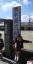
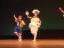
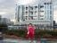
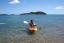
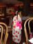

2005年4月7日 10時48分撮影
桜井小学校に入学しました。その昔、パパも通っていた小学校です。
由起子は１年１組。これからスタートする学校生活にドキドキワクワク！
2005年3月25日 12時18分撮影
卒園式。ママは、溢れそうになる涙をこらえるのに必死でした。
あすか保育所で色んなことを学び、元気に・逞しく育ってくれましたね。
2005年3月6日 13時39分撮影
保育所生活最後の「春まつり」由起子の役は、ピノキオのホーリー
先生の手作り衣装。。。素晴らしいの一言に尽きる！脱帽です！2005年3月1日 19時10分撮影
お雛祭り：由起子とパパが散らし寿司を作ってくれました
年々、大きくなる由起子。。。一年の成長ってすごいねぇ・・・2005年2月14日 9時33分撮影
ずっとずっと行きたかった「東京ディズニーランド」にて・・・
ハードな毎日でしたが３日間存分に楽しみました

2005年2月11日 15時11分撮影
東京観光・・・今、話題沸騰中のフジテレビ：見学もしました
ｼｰｽﾙｰｴｽｶﾚｰﾀｰがとっても長くて、展望台からの眺めはサイコー！2005年1月16日 10時18分撮影
曽爾高原でソリ滑りを楽しむ。同じ奈良県なのにここは別世界です。。
2005年1月3日 14時37分撮影
パパとカヤックに挑戦。海はとーーーっても綺麗でした。2005年1月1日 21時43分撮影
元旦。夜のショーはミニクラブメンバーが主役です。
ホッペのハートマーク、、、可愛いでしょう？！
2004年12月31日 20時11分撮影
大晦日の夕食時：テーブルには帽子、笛、風船などが置いてあり、
お祭り気分が盛り上がります。